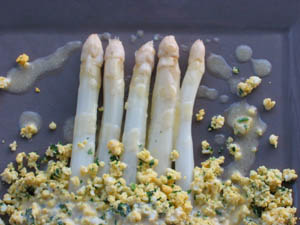

Asperges op zijn Vlaams
Ingrediënten (voor 4 personen)
- 1 kg asperges
- 4 hardgekookte eieren
- peper
- zout
- 150 g boter
- 1 bosje peterselie
Bereiding
-
Reinig de asperges en kook ze beetgaar.
-
Laat de boter smelten.
-
Plet de hardgekookte eieren, kruid met peper en zout en roer er beetje bij beetje de gesmolten boter onder.
-
Laat de asperges uitlekken, schik ze op een voorverwarmde schotel, overgiet ze met de saus en versier met gehakte peterselie.